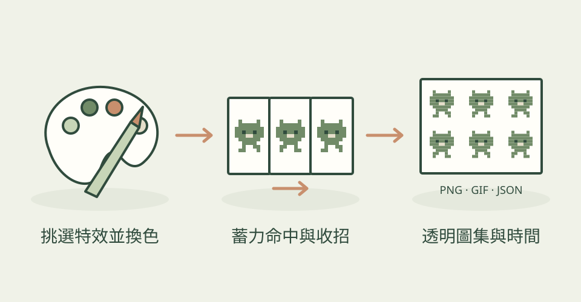

火球飛出去很漂亮，角色卻像站著貼上一張動畫，打擊感仍會不足。pixelfx 把效果和身體動作的時間放在一起：先蓄力、出手、命中時短暫停格，再回到準備姿勢。
它怎麼幫忙
目前 README 列出 244 種效果，涵蓋火焰、爆炸、冰霜、魔法、天氣與介面等，另有 12 套完整攻擊動作。真正的 SKILL.md 先找現有素材，再換色、鏡射或調整參數；要新效果時，以草稿、影格總覽、看圖修正的方式反覆製作。JavaScript 遊戲可以直接播放程式；其他引擎可輸出透明 PNG 圖集及 Aseprite 風格 JSON，保留幀時間與樞紐資訊。
三步驟看懂這個技能

以程式修改像素特效，配合角色動作再輸出圖集；本站功能示意，非作者作品。
功能示意・本站繪製 放大查看可以這樣開口
這是一個可依需求修改的委託範例。
替冰法師做一圈從腳底向外炸開的冰霜，先試三套藍紫配色。角色施法前蓄力，命中時停兩格再收招；讓我比較動作影片，最後交透明 PNG 圖集與時間 JSON，供 Godot 匯入。
適合什麼工作
適合獨立遊戲開發者、像素美術與想調整打擊感的技術美術。能改程式、願意逐格看動作的人，較容易做出符合自己角色的版本。
開始之前
- 準備工具
- Node 18+、能讀程式和看圖的 agent；GIF／MP4 預覽另需 ffmpeg。作者主要示範 Claude Code，本站未驗證其他宿主。工具文件說不需安裝額外套件；圖集交付仍需在目標引擎設定最近鄰取樣、幀率與樞紐。
- 使用成本
- 程式與效果採 MIT，可商用，需保留聲明；沒有必需的付費生圖 API。AI 助手用量、人工調整與本機運算另計。展示庫的 Patch Pixel 字型另有權利保留，不能視為隨 MIT 任意使用；本篇未下載該字型。
- 交付內容
- 可修改的 JavaScript 特效、透明 PNG 圖集、Aseprite 風格 JSON、GIF／MP4 預覽
- 先留意
- 2026-11-04 首次收錄，儲存庫建立於 2026-10-30，核對分支提交日期為 10-31，並非今天發布。4,115 顆星是整個儲存庫收藏量。JSON 並不是可編輯的 .aseprite 原檔；附在身體上的效果原以作者示範人偶繪製，換自己的角色時可能需要重製。圖集的光暈已烘焙成帶透明度的顏色，明亮場景需另調整。本站只閱讀文件，沒有執行候選程式。
最近的觀察
2026-11-10：0.3.1 補上把使用特效的瀏覽器遊戲發布到 Patch 的流程；遊戲能跑後才提出一次發布選項，需使用者明確同意。這是交付流程補充，特效種類與繪製能力未新增。例如完成含命中特效的小遊戲後，讓朋友透過 Patch 試玩。發布另需 pch CLI、登入與開啟且已登入的 Windows Patch Desktop，先試玩再送審；平台條件與費用另查當次方案。本站沒有安裝 CLI 或發布候選遊戲。
作者與來源
本文依作者公開說明整理，沒有實際執行這個專案。功能插圖由本站繪製，原作者範例另行標示；並非本站執行技能的測試結果。GitHub 星數為專案總量，觀察時間為 2026年11月13日 08:34（台北時間）。
與前次快照相比增加 194 星；這不是 GitHub Trending 排名。